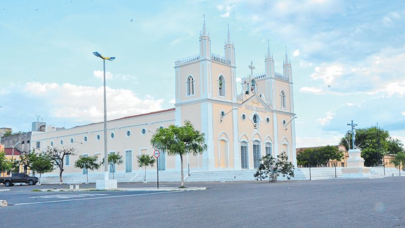

Informações técnicas sobre relevo, população, IDH etc.
| INFORMAÇÕES | |
|---|---|
| Municípios limítrofes | Cariré, Groaíras, Forquilha, Sobral, Irauçuba, Canindé, Itatira Boa Viagem, Monsenhor Tabosa, Catunda, Hidrolândia, Pires Ferreira e Varjota |
| Fundação | 27 de agosto de 1856 (164 anos) |
| Área total | 10,3 hab./km² |
| Clima | Semiárido |
| IDH | 0,718 — alto |
| PIB | R$ 11,678,55 |
| INFORMAÇÕES TERRITORIAIS | |
|---|---|
| Número de habitantes | 43 703 habitantes |
| Superfície de Santa Quitéria |
426 046 hectares
4260,46 km² (1644,97 sq mi) |
| Densidade populacional | 10,3 ha./km² |
| Altitude de Santa Quitéria | 203 metros de altitude |
| Coordenadas geográficas decimais |
Latitude:
-4.33238
Longitude: -40.1573 |
| Coordenadas geográficas sexagesimais | Latitude: 4° 19' 57'' Sul , Longitude: 40° 9' 26'' Oeste |
| INFORMAÇÕES DO MUNICÍPIO | |
|---|---|
| Endereço da Prefeitura Municipal de Santa Quitéria |
Santa Quitéria
Prefeitura de Santa Quitéria
Rua Professora Ernestina Catunda, 50 Piracicaba SANTA QUITÉRIA - CE, 62280-000 Brasil Work +55 88 3628-0161 Fax +55 88 3628-0228 |
| Telefone da prefeitura |
(88) 3628-0161
Internacional: +55 88 3628-0161 |
| Fax |
(88) 3628-0228
Internacional: +55 88 3628-0228 |
| Endereço eletrônico da prefeitura |
eugeniamuniz@bol.com.br
|
| Site oficial do município | santaquiteria.ce.gov.br |
| INFORMAÇÕES DO ADMINISTRATIVAS | ||
|---|---|---|
| Prefeito de Santa Quitéria | JOSÉ BRAGA BARROZO | |
| Partido politico | PSB | |
| INFORMAÇÕES DE TRANSPORTE | |
|---|---|
| Transporte urbano disponível | - |
| Aeroporto |
Aeroporto Internacional Pinto Martins
Aeroporto de Sobral
75.1 km
Aeroporto Pinto Martins
175.7 km
|
| INFORMAÇÕES DE DISTÂNCIA A OUTRAS CIDADES | ||
|---|---|---|
| São Paulo : 2250 km | Rio de Janeiro : 2093 km | Brasília : 1532 km |
| Salvador : 978 km | Belo Horizonte : 1772 km | Manaus : 2211 km |
| Curitiba : 2542 km | Fortaleza : 192 km mais perto | Goiânia : 1696 km |
| Belém : 981 km | Porto Alegre : 3088 km | Guarulhos : 2229 km |
| Campinas : 2197 km | São Luís : 503 km | São Gonçalo : 2.583 km |
| Distância calculada em linha reta! | ||
Conheça mais sobre a história de Santa Quitéria.
Ignora-se quando se deram ao certo as primeiras penetrações na região em que se localiza atualmente o Município de Santa Quitéria. No século XVIII os irmãos José Machado Freire e Miguel Machado Freire, conseguiram por sesmaria, seis léguas de terra às margens do Rio Groaíras, porém foi em 1760 que João Pinto de Mesquita que residia na Fazenda Jacurutu Velho, próximo de onde é hoje o Distrito de Malhada Grande, instalou uma fazenda para abrigar seu filho, João de Mesquita Pinto, recém casado. Esta fazenda, localizada às margens do Riacho Cascavel, foi a primeira fazenda da região e chamava-se Fazenda Cascavel.
Outras casas foram sendo construídas ao redor da fazenda, com o aumento da população surgiu a necessidade de ser erigida uma capela, o que aconteceu nas proximidades de onde é hoje o cruzamento das ruas João Rodrigues Pinto e Adroaldo Martins. A família Pinto de Mesquita desejando formar um povoado fez doação do terreno próximo a foz do Riacho Cascavel, estabelecendo a condição de que seus descendentes teriam direito de edificar suas habitações nas terras doadas.
Em março de 1823 o povoado é elevado à freguesia, unida à capela de Santa Quitéria (vide Cap. Paroquial de Santa Quitéria). A comarca de Santa Quitéria foi criada em 1873, compreendendo os termos de Santa Quitéria e Tamboril, posteriormente tornaram-se independentes, sendo a de Santa Quitéria criada em 1884 e a de Tamboril em 1874. A comarca foi primeiramente Tamboril, depois transferida a sede para Santa Quitéria em 1879.Era uma comarca de primeira entrância.
Quando o município foi criado, sendo desmembrado de Sobral em 1856, possuía uma área bem maior. Com o passar dos tempos foi perdendo parte de seu território para criação de outros municípios. Em 1929 perdeu o distrito de Riacho Guimarães para ser criado o município de Cariré. Riacho Guimarães hoje é a cidade de Groaíras. Em 1951 perdeu parte de suas terras situadas nas Serra das Matas para fazer parte do município de Monsenhor Tabosa. Em 1957 foi a vez do então distrito de Hidrolândia se emancipar e em 1990 o distrito de Senador Catunda também se tornou independente.
A povoação teve o nome de Cascavel até a conclusão do templo, que foi dedicado a Santa Quitéria. Daí, então, tomou o nome da Santa, o qual perdurou até hoje. Seu primeiro vigário foi o padre Francisco Gomes Parente.
Saiba mais sobre os melhores lugares e o que fazer em Santa Quitéria.

Veja como chegar nos melhores pontos de Santa Quitéria.